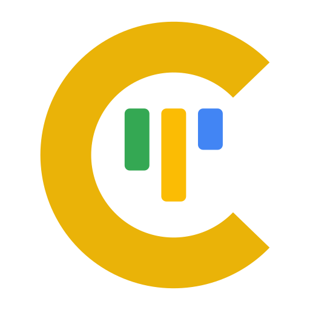

Plan the work.
Keep the board in its link.
Add a card and move it from To do to Done. Bookmark the page or send the link, and the whole board goes with it.
Try:
Runs in your browser. Nothing you add here is uploaded. The board lives in its link and in this browser.
TODO 0
IN PROGRESS 0
DONE 0
Runs in your browser. Nothing you add here is uploaded. The board lives in its link and in this browser.